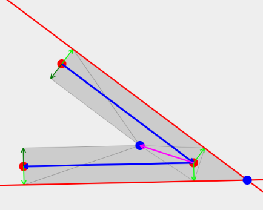

线段连接问题 Line Join¶
OpenGL 中提供了一些基础的图形绘制功能
- GL_LINE: 绘制线条
- GL_LINE_LOOP: 绘制循环线条
- GL_TRIANGLE: 绘制三角形
有了这些功能，画线条看起来像是非常简单的一件事情，让我们来看看如何在OpenGL中绘制“线条”，以及把线条连接起来。
线条的基本要素¶
2个顶点确定一个线条，这是我们所熟知的数学概念。绘制一个线条，最基本的就是要确定2个端点，我们用下面这两组坐标来定义这个线条。
- (x1, y1)
- (x2, y2)
除此之外呢，作为计算机图形，还增加了以下属性，来让我们能够看清这条线段
- 线条的样式，比如颜色、透明度
- 线条的粗细程度
线条粗细 LineWidth¶
在OpenGL中，GL_LINE用于绘制线条，用linewidth属性来制定线条的宽度。在实际上，在OpenGL中，线条的宽度被限制了，大概是20个像素。这样如果需要画一条非常粗的线，就不能使用线段方法了。
设置的宽度为绿色框宽度，实际为红色宽度，达不到我们画粗线的目标。实际上，在OpenGl中，宽度限制为：GL_LINE_WIDTH_RANGE ，可以通过glGet查询。
OpenGl擅长于绘制三角形，那么我们就有了一个办法，用三角形来模拟这个线段。
很容易理解，用2个三角形即可绘制一条任意的线段。
线段连接 LineJoin¶
绘制一个长方形，我们需要找出4个点，然后用GL_LINE_LOOP将这4个点首尾连接起来。就组成了一个长方形。
到目前为止，一切都还很正常，朝着我们预期的目标发展。接下来，我们把线条的宽度增大，就出现了下面的情况
如果我们把颜色换成半透明的，可以看到为什么会形成这样的图形
相邻的每个点都用一条线段连接，但是线段的连接处却没有图形，也就形成了这样缺角的问题。更严重的是，其中一些地方，还重复绘制了，和我们预期的图形完全不一样。这就是我们要解决的问题，线段连接问题。
线段连接的类型 Type¶
线段连接有多种方式，一般有3种方法，分别称之为bevel,miter,round，他们的效果分别是这样子的。
bevel¶
将突出的点连接起来，图中的黑色三角形。实际在处理时，不会单独绘制这个三角形，二十将线段的图形分为了灰色线段的这几个三角形来处理。
miter¶
更常用的是miter，将外接的延长线绘制出来。
round¶
round，顾名思义，就是使用圆角连接。当然，圆角也是通过一大堆的三角形来绘制的。
简化的miter¶
这几个连接的方式基本类似，我就简单说明一下miter如何去计算，其他的都类似。

观察图形及辅助性，这里最最关键的是要计算出紫色的这个向量，然后就可以计算出内外2个相交点。而要计算出紫色向量，就要去计算出2条边的法向量。
计算步骤：
- 计算2条边的单位法向量，旋转90°
- 法向量的长度为线宽的一半
- 紫色向量的方向为2个法向量之和的方向
- 紫色向量长度计算（法向量在紫色向量上的投影长度 / 法向量长度 = 法向量长度 / 紫色向量长度）
计算细节不在这里说明，要指出的是，在计算时要注意两条边的法向量的方向，确保是同时向外或者向内。如果是闭合图形，我们就可以循环计算所有的点，使用计算后的点来绘制图形。